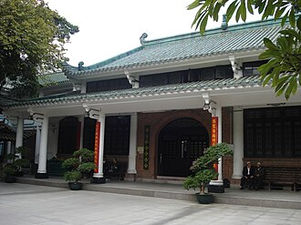

PrésentationتقديمOverview
La Mosquée Huaisheng est une mosquée hui de Canton, dans la province du Guangdong, au sud de la République populaire de Chine. Selon un manuscrit de 1206, elle aurait été fondée par Sa`d ibn Abi Waqqas, un proche du prophète Mahomet.
مسجد هوايشينج(بالصينية المبسطة: 广州怀圣寺؛ بالصينية التقليدية: 廣州懷聖寺؛ يُعرف أيضًا باسم مسجد المنارة والجامع الكبير في كانتون) هو المسجد الرئيسي في قوانغتشو. أُعيد بناؤه مرات عديدة عبر تاريخه، ويُعتقد تقليديًا أنه بُني منذ أكثر من 1300 عام، مما يجعله أحد أقدم المساجد في العالم. وينسب إلى الصحابي سعد بن أبي وقاص. ويقال بأنه بني على يد مسلم اسمه وقاص عندما جاء إلى الصين وهذا يتفق مع الكتابات العربية المنقوشة على اللوح الرخامي في مسجد هوايشنغ، حيث جاء فيها:
The Huaisheng Mosque is the main mosque of Guangzhou, located in the Yuexiu District, in the Guangdong Province of China. Rebuilt many times over its history, some historical texts claim that it was first built in the 7th century, but modern scholarship places its foundation at a later period during the Tang or Song dynasties.
Huaisheng Camii ya da Fener Camii Çince (basitleştirilmiş): 怀圣寺; Çince (geleneksel): 懷聖寺; pinyin: huáishèng sì; Jyutping: waai4 sing3 zi6, Türkçe okunuşu Huayşengsi, Çin'in Guangzhou kentinde yer alan bir cami.
Masjid Huaisheng, yang juga dikenal dengan nama Masjid Mercusuar, adalah sebuah masjid utama di Guangzhou. Berkali-kali dibangun dalam sejarahnya, masjid tersebut menurut tradisi awalnya dibangun pada 1.300 tahun yang lalu, yang membuat masjid tersebut menjadi salah satu masjid tertua di dunia. Masjid tersebut dibangun untuk mengenang nabi Islam Muhammad.
مسجد ہوائشنگ چین کی ایک قدیم ترین مسجد ہے جو چین میں مسلمانوں کے پہلے قافلے نے 630ء کی دہائی میں تعمیر کروائی تھی۔ یہ چین کے علاقے گوانگ ژو(چینی زبان میں 廣州، انگریزی میں Guangzhou) میں واقع ہے۔ یہ چین کے صوبہ گوانگ ڈونگ میں واقع ہے اور ہانگ کانگ سے صرف 120 کلومیٹر کے فاصلے پر ہے۔ اس مسجد کے بے شمار دوسرے نام بھی ہیں مثلاً مسجد گوانگ ژو، مسجد گوانگ تاسی اور مسجد ہوائی سن سو۔
Die Huaisheng-Moschee auf der Straße namens Guangta Lu in Guangzhou (Kanton), China, gilt als die älteste Moschee Chinas. Sie wurde im 7. Jahrhundert in der Zeit der Tang-Dynastie erbaut. Der chinesische Name Huaisheng bedeutet, dass sie zum Gedenken an Mohammed, den Gesandten Allahs, errichtet wurde.
La Mezquita Huaisheng, también conocida como la Mezquita Faro, es la mezquita más importante de Cantón, China. Fue reconstruida varias veces a lo largo de su historia. Tradicionalmente se cree que se construyó hace más de 1300 años, lo que la haría una de las mezquitas más antiguas del mundo. Fue nombrada en honor al profeta Mahoma.
La moschea Huaisheng, anche nota come moschea del Faro, è la principale moschea di Canton. Ricostruita più volte nella storia, la tradizione attribuisce la sua costruzione a oltre 1 300 anni fa, il che la renderebbe una delle più antiche mosche al mondo. È stata intitolata alla memoria del Profeta dell'Islam, Maometto.
De Huaishengmoskee is waarschijnlijk een van de oudste moskeeën van China. Volgens de legende werd deze moskee door de oom van Mohammed, Sa`d ibn Abi Waqqas in het jaar 627 gebouwd. De islam zou ook via de oom in China verspreid zijn.
怀圣寺又称光塔寺、怀圣光塔寺、龙凤寺、礼拜寺等，位于中华人民共和国广州越秀区光塔路56号，始建于唐代，是中國现存最早的清真寺，甚至是世界最早的清真寺之一。寺內懷聖塔原為教徒誦經之所，因塔位於當時的珠江邊，入夜後燈光可為船隻導航，故獲稱光塔。怀圣寺光塔为中华人民共和国全国重点文物保护单位。
हुइशेंग मस्जिद चीन के गुआंगडोंग प्रांत में युएक़्सिउ जिले में स्थित गुआंगज़ौ की मुख्य मस्जिद है। अपने इतिहास में कई बार पुनर्निर्मित की गई इस मस्जिद के बारे में कुछ ऐतिहासिक ग्रंथों का दावा है कि इसे पहली बार 7वीं शताब्दी में बनाया गया था, लेकिन आधुनिक विद्वान इसकी स्थापना को टांग या सोंग काल के दौरान के बाद के काल में रखते हैं।
Мечеть Хуайшэн, также известная как Башня-Маяк — главная мечеть города Гуанчжоу на юге Китая. Китайские мусульмане традиционно считают, что она была первоначально построена более чем 1300 лет назад, что делает её одной из самых старых мечетей в мире. Её так назвали в память о Пророке Мухаммеде.
มัสยิดหฺวายเชิ่ง ซึ่งยังเป็นที่รู้จักกันในชื่อ มัสยิดประภาคาร และ มัสยิดใหญ่แห่งกวางตุ้ง เป็นมัสยิดหลักในกว่างโจว สร้างขึ้นใหม่หลายครั้งตลอดช่วงประวัติศาสตร์ โดยเชื่อกันว่ามัสยิดนี้สร้างขึ้นเป็นครั้งแรกเมื่อ 1,300 ปีมาแล้ว ทำให้มัสยิดนี้เป็นหนึ่งในมัสยิดที่เก่าแก่ที่สุดในโลก
Moscheea Huaisheng este o moschee din orașul Guangzhou, China. Se presupune că aceasta este cea mai veche moschee din China și una dintre cele mai vechi din lume.
Sur la carteعلى الخريطةOn the map
Documents et liensوثائق وروابطDocuments and links
- Wikipédia — Français
- Wikipédia — العربية
- Wikipédia — English
- Wikipédia — Türkçe
- Wikipédia — Bahasa Indonesia
- Wikipédia — اردو
- Wikipédia — Deutsch
- Wikipédia — Español
- Wikipédia — Italiano
- Wikipédia — Nederlands
- Wikipédia — 中文
- Wikipédia — हिन्दी
- Wikipédia — Русский
- Wikipédia — ไทย
- Wikipédia — Română
- Wikidata — Q992508
Données : Wikidata (CC0), mises à jour tous les 3 mois. L'année est la plus ancienne date de construction connue du bâtiment : pour un édifice devenu mosquée plus tard (comme Sainte-Sophie), c'est celle du bâtiment d'origine. Photos : Wikimedia Commons, auteur et licence sur la page de chaque photo.البيانات: ويكي بيانات (CC0)، تُحدَّث كل 3 أشهر. السنة هي أقدم تاريخ معروف لبناء المبنى: فإن صار مسجدًا لاحقًا (مثل آيا صوفيا) فهي سنة المبنى الأصلي. الصور: ويكيميديا كومنز، المؤلف والرخصة في صفحة كل صورة.Data: Wikidata (CC0), updated every 3 months. The year is the earliest known construction date of the building: for a building that became a mosque later (such as Hagia Sophia), it is that of the original building. Photos: Wikimedia Commons, author and licence on each photo's page.
Grandes mosquées du mondeالجوامع الكبرى في العالمGreat mosques of the world →